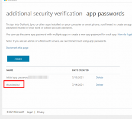
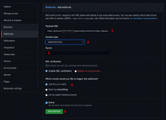
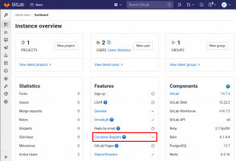

Also on Programster's Blog

Connecting Thunderbird To Office 365 When …
Connecting Thunderbird To Office 365 When Using 2FA / MFA Two-factor …

Integrate Jenkins Multibranch Pipeline …
Integrate Jenkins Multibranch Pipeline With Git / GitHub This tutorial …

Things To Do After Getting A Hetzner …
Under Maintenance or in Progress... This post is being updated or still …

Dockerized GitLab - Enable Container …
Dockerized GitLab - Enable Container Registry Related Posts Steps Edit your …
Dockerized GitLab - Enable Container …
Dockerized GitLab - Enable Container Registry Related Posts Steps Edit your …
Hetzner - External Firewall
Under Maintenance or in Progress... This post is being updated or still …